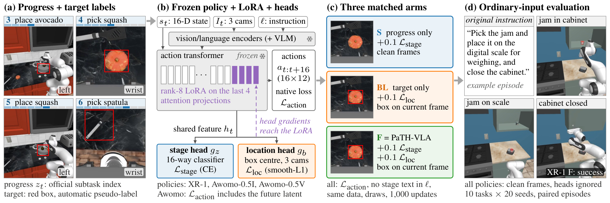
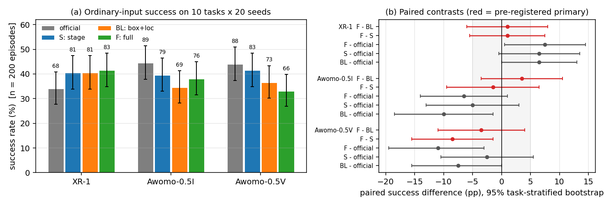
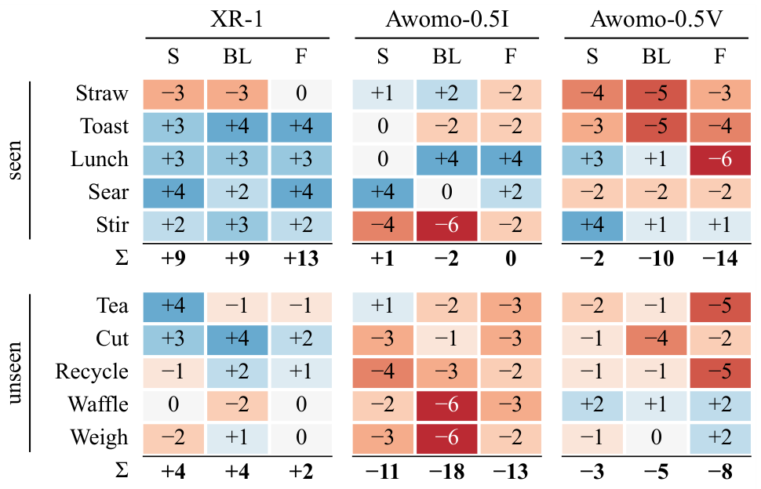
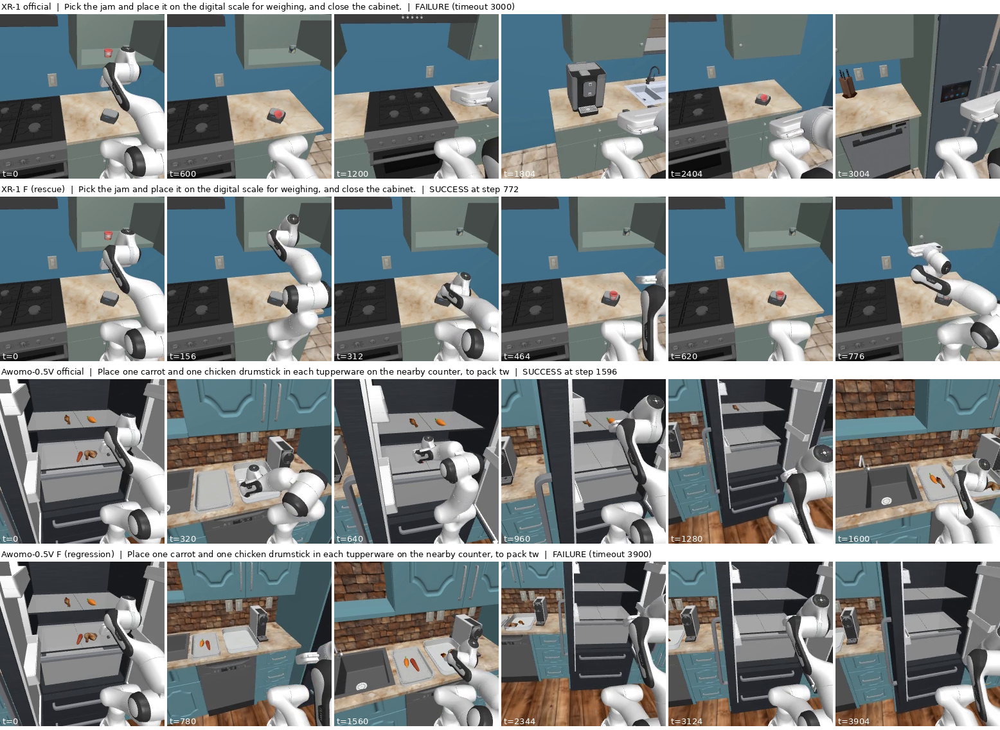
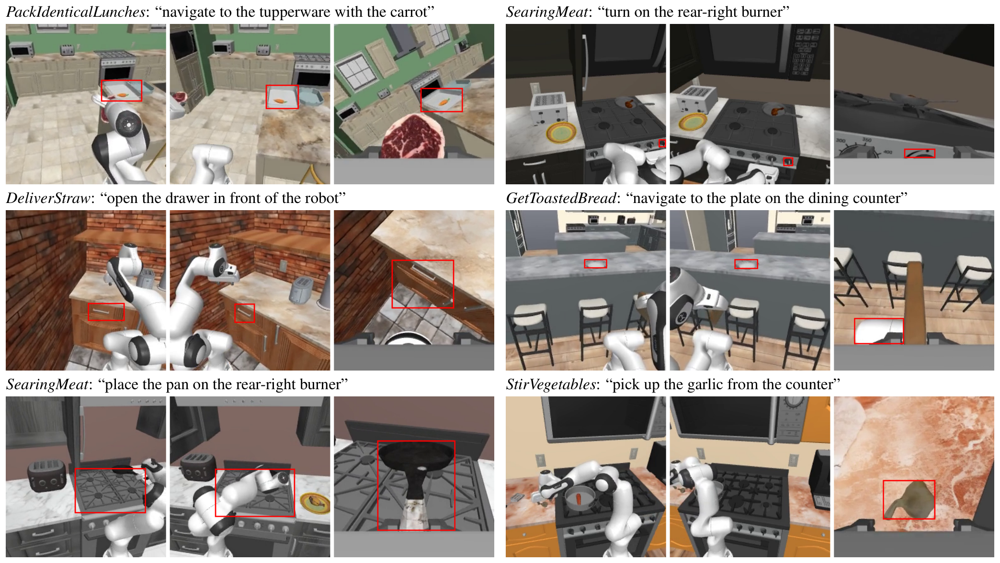

Robot learning / Long-horizon manipulation
PaTH-VLA
Where am I, where do I look?
Progress-and-Target context for adapting pretrained generalist robot policies: a pre-registered, paired ablation of stage supervision and box-plus-location supervision on three RoboCasa365 policies, evaluated with ordinary inputs on 2,400 episodes.
The question
Which context does a pretrained policy actually learn from?
Three arms share the checkpoint, the demonstrations, the window panel, the optimizer and 1,000 updates; only the auxiliary signal differs (for XR-1 also the random initialisation of the new heads; one training seed per arm). Every arm is then run exactly like the official checkpoint, with no prompt at test time.
Pre-registered primary contrasts
0 of 6 supported
F − BL and F − S in three models; the only interval excluding zero is negative (Awomo-0.5V, F − S = −8.5 pp)
The adaptation recipe
Two cheap context signals, one controlled comparison.
A frozen policy keeps its vision and language backbones and its action transformer; rank-8 LoRA adapters on four late projections and two linear heads are the only trainable parameters. The progress head predicts the official RoboCasa365 subtask stage; the target head predicts the normalized centre of the current target in each camera, and the target's box is drawn on the current frame during training. Boxes are automatic pseudo-labels: Grounding DINO proposals, SAM 2.1 tight masks, and Qwen3-VL-4B picking the described instance.

Stage supervision only
Action loss + 0.1 × stage cross-entropy on the shared feature. Clean frames.
Box + location only
Action loss + 0.1 × location smooth-L1; the target box is drawn on the current frame of every camera where it is visible.
Both channels
Stage and location losses, box drawn. F − BL measures progress given target, F − S target given progress.
No stage text is added to the instruction in any arm, and all arms are evaluated with ordinary inputs (original instruction, clean frames, heads ignored), so the comparison measures what the supervision taught the policy rather than how an inference-time prompting loop performs. The official checkpoint is the external reference; by design there is no matched action-only arm, so differences to the official checkpoint mix the auxiliary signal with extra action training.
Paired, pre-registered evaluation
No evidence that the two signals add up.
Each of the twelve policies runs the same 200 episodes: ten RoboCasa365 composite tasks × twenty fixed seeds, five tasks whose demonstrations were used for adaptation and five never seen. A seed is meant to fix the kitchen, objects and initial state, so all comparisons are paired by (task, seed). Hashing the first left-camera frame shows it identical across all twelve policies for 191 of the 200 seeds; repeated on those 191, no contrast becomes supported, and Awomo-0.5V's F − S loss also passes the Holm correction (p = 0.031).
- DeliverStraw
- GetToastedBread
- PackIdenticalLunches
- SearingMeat
- StirVegetables
- ArrangeTea*
- CuttingToolSelection*
- RecycleBottlesByType*
- WaffleReheat*
- WeighIngredients*
* composite-unseen: never used for adaptation, labelling or tuning. Tasks were screened before any run by published success rates in [20%, 60%] for all three models: five seen and six unseen tasks passed, and PortionHotDogs (exactly 20% for all three) was left out.
| Model | Official checkpoint | S (progress) | BL (target) | F (PaTH-VLA) |
|---|---|---|---|---|
| Xiaomi Robotics 1 | 68 / 200 · 34.0% | 81 · 40.5% | 81 · 40.5% | 83 · 41.5% |
| Awomo-0.5I | 89 / 200 · 44.5% | 79 · 39.5% | 69 · 34.5% | 76 · 38.0% |
| Awomo-0.5V | 88 / 200 · 44.0% | 83 · 41.5% | 73 · 36.5% | 66 · 33.0% |
| Model | F − BL (progress given target) | F − S (target given progress) | F − official |
|---|---|---|---|
| Xiaomi Robotics 1 | +1.0 pp [−6.0, +8.0], p = 0.89 | +1.0 pp [−5.5, +7.5], p = 0.89 | +7.5 pp [+0.5, +14.5], p = 0.049 |
| Awomo-0.5I | +3.5 pp [−3.5, +10.5], p = 0.43 | −1.5 pp [−9.5, +6.5], p = 0.81 | −6.5 pp [−14.0, +1.0], p = 0.12 |
| Awomo-0.5V | −3.5 pp [−11.0, +4.0], p = 0.46 | −8.5 pp [−15.5, −1.5], p = 0.030 | −11.0 pp [−19.5, −3.0], p = 0.015 |
Differences in percentage points pooled over 200 (task, seed) pairs; brackets are 95% task-stratified paired-bootstrap intervals; p from the exact two-sided McNemar test on discordant pairs. Holm correction over the two primary contrasts per model leaves none supported under the pre-registered rule (corrected interval excludes 0 and gain ≥ 5 pp). All three XR-1 arms gain 6.5–7.5 pp over the official checkpoint, mostly on the five seen tasks (F: +13 pp seen, +2 pp unseen; S and BL: +9 and +4). Awomo-0.5I's BL arm loses 10.0 pp (p = 0.033), 18 pp on unseen tasks. Awomo-0.5V's official checkpoint scores 88/200 after 18 episodes that crashed with a GPU out-of-memory error were rerun, a decision taken after partial results had been seen; all 18 were on unseen tasks, and counting them as failures gives 83/200 and F − official −8.5 pp (p = 0.068); the seen-task loss of F (−14 pp, p = 0.029) does not depend on the reruns.
No evidence of complementarity
Given one signal, adding the other raises success by at most +3.5 pp (upper 95% bounds up to +10.5 pp) and lowers it by 8.5 pp for Awomo-0.5V.
Progress-only stays close
The stage-only arm is never significantly below the official checkpoint (+6.5, −5.0, −2.5 pp), but its intervals reach down to −13 pp and it loses 11 pp on Awomo-0.5I's unseen tasks (p = 0.09).
Significant losses are in box-trained arms
Every nominally significant loss is in an arm that drew boxes during training (Awomo-0.5I BL; Awomo-0.5V F, pooled only with the reruns, on the seen tasks regardless), though the losses are not confined to those arms. Without an action-only arm the boxes cannot be blamed.


Progress yes, location barely
On training data the stage heads beat a per-task prior; XR-1's and Awomo-0.5V's location heads barely beat a per-task constant, and Awomo-0.5I's do not.
Own target as a prompt
Drawing the policy's own predicted target back as a box at test time helps no model. Change relative to ordinary inputs: XR-1 −10.0 pp [−17.5, −2.5], p = 0.013; Awomo-0.5I −5.0 pp [−12.5, +2.5], p = 0.26; Awomo-0.5V −4.0 pp [−11.5, +3.5], p = 0.38.

Automatic target labels
No human drew a box.
198 task-specific stage descriptions were mapped to a detector class and an instance hint. Grounding DINO proposes boxes, SAM 2.1 tightens them to masks, and Qwen3-VL-4B selects the described instance per camera (the container with the carrot, the knob of the rear-right burner) or declares it not visible. 8,174 of 8,931 training windows have a visible target in at least one camera and form the panel shared by all arms. A view-by-view audit of 48 random windows, checked independently, found 26 of the 103 boxes clearly wrong (12 on a robot link or the gripper, 8 on the wrong instance among duplicates, 3 on another object, 2 on a chair, 1 on the carried pan) and one more probably wrong; 76 to 77 (74–75%) bound the described target, 10 of them only coarsely (the whole toaster, stove top or drawer front).

Research materials
Read the study and inspect its data.
Download BibTeX citation · Manuscript source (ZIP). Research preprint; no conference acceptance is claimed.
PaTH-VLA succeeds the BranchBox study, which examined the same two signals on LIBERO with compact policies; the two use different benchmarks, models and protocols and their numbers are not comparable. Both belong to the OriginX research collection.